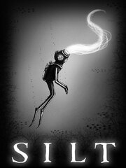

SILT
SILT
Detalles
|  | |
| Tiempo de juego | No Jugado |
| Última actividad | Nunca |
| Añadido | 31/07/2024 19:41:58 |
| Modificado | 31/07/2024 19:42:49 |
| Estado de finalización | Not Played |
| Librería | Steam |
| Fuente | Steam |
| Plataforma | PC (Windows) |
| Fecha de lanzamiento | 01/06/2022 |
| Puntuación de la Comunidad | 73 |
| Puntuación de la Crítica | 55 |
| Puntuación de usuario | |
| Género | Adventure Indie |
| Desarrollador | Spiral Circus Games |
| Editor | Fireshine Games |
| Característica | Achievements Family Sharing Full Controller Support Single Player |
| Enlaces | Punto de encuentro Discusiones Guías Noticias Página de la tienda PCGamingWiki Logros |
| Tag | 2D Adventure Atmospheric cinematic Dark Dark Fantasy Exploration Hand-drawn Horror indie Interactive Fiction Philosophical psychedelic Puzzle Puzzle-Platformer Side Scroller Singleplayer Surreal Third Person underwater |
Descripción

SILT is a surreal underwater puzzle-adventure game. Alone in an underwater abyss, you are a diver searching the deep to uncover long-forgotten mysteries. Possess the creatures around you to solve puzzles and travel further into the darkness…

Nature has evolved into bizarre forms. Discover strange organisms, unexplored ruins and ancient machinery hidden beneath the water’s surface.

Survive encounters with giant deep-sea goliaths. Harness their power to awaken a long-dormant force at the centre of the abyss.

Experience art brought to life. SILT’s unsettling, monochrome world is constructed from the sketches and dark imagination of artist Mr Mead. A harrowing journey awaits you…

EPILEPSY WARNING
Please read before playing this game or allowing your children to play it:
Some people are susceptible to epileptic seizures or loss of consciousness when exposed to certain flashing lights and moving patterns in everyday life. Such people may have a seizure while watching television images or playing certain video games. This may happen even if the person has no medical history of epilepsy or has never had any epileptic seizures.
If you or anyone in your family has ever had symptoms related to epilepsy (seizures or loss of consciousness) when exposed to flashing lights or moving patterns, consult your doctor prior to playing this game. If you or your family experience any symptoms of seizure while playing this game, such as dizziness, nausea, or loss of consciousness, stop playing immediately and seek medical attention.